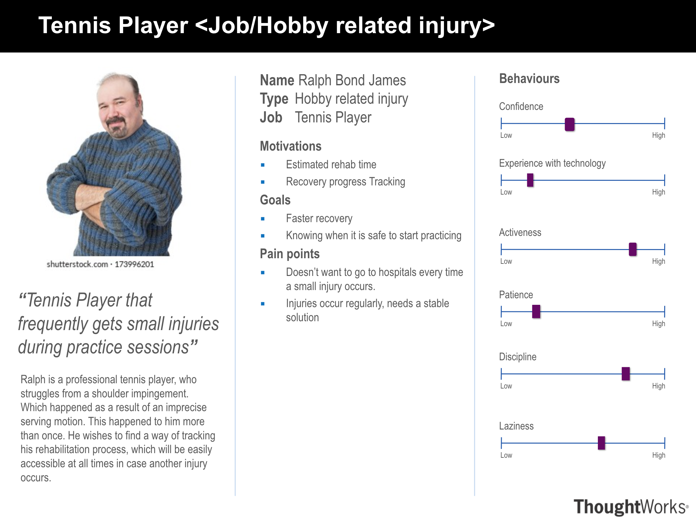
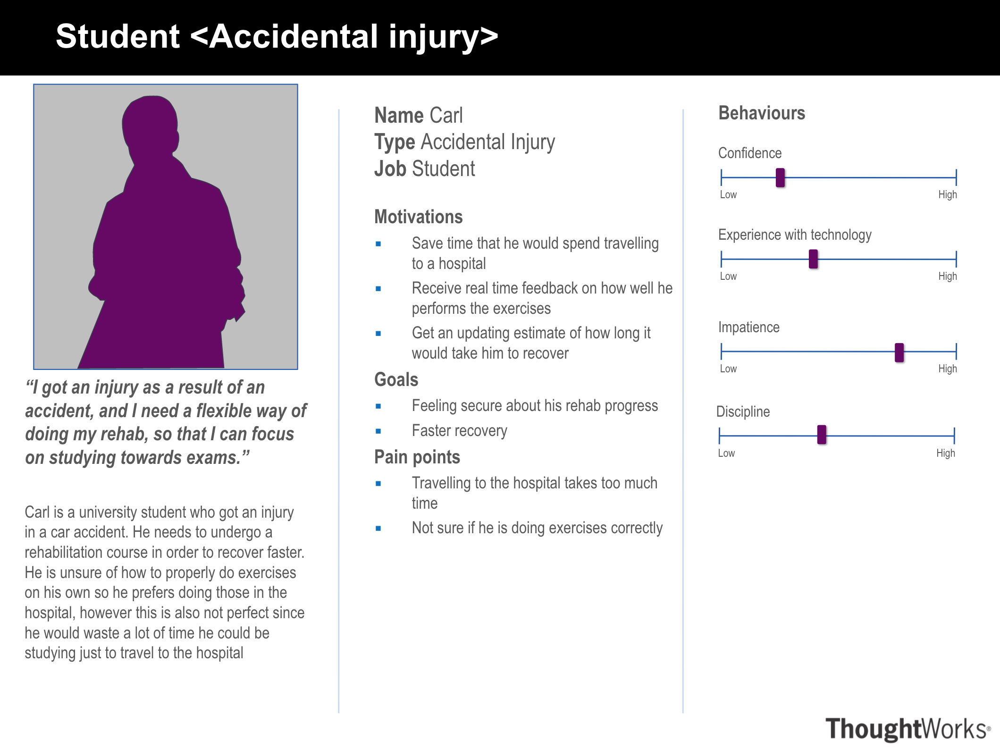

Requirements#
Project background#
CopyClare is an application that aims to explore and capture the rehabilitation process. Physiotherapists are constantly in high demand, making it hard to schedule appointments with them. This is not ideal for patients, as they need to start the rehabilitation process as soon as possible for a smooth and speedy recovery. With CopyClare, the rehabilitation process can be digitalised, allowing for remote physiotherapy. This has become even more relevant in the face of the pandemic.
Client introduction#
Professor Dean Mohamedally. Dean is our client and supervisor for MotionInput.
Professor Joseph Connor. Joseph represents the NHS and the British Elbow & Shoulder Society (BESS). He is our main client.
Neurophysiotheraphy researchers team - Masters students & supervisor. We collaborated with the team who wanted an application that could improve the physiotherapy process. We received feedback and suggestions on our UI from them, which we would incorporate into our UI design for an improved design, essentially enhancing the user experience on top of Joseph’s main requirements.
Project goals#
The main goal of CopyClare is to provide the same support to patients as an in-person session with a physiotherapist would. The UI needs to be as intuitive and simple as possible, while (according to the Masters students) being as engaging as possible, as the rehabilitation process is repetitive and ‘boring’ to many patients. It also aims to visualise the patient’s progress, which will act as motivation to complete their assigned exercises.
Requirement gathering#
Asking university students. As anyone can potentially be our user, we decided to collect data using a questionnaire from university students, as they are the easiest to reach. We created an anonymous survey which requires the students to think from the point of view from a physiotherapy patient, while prompting them to give suggestions on features to include. The survey data is then reorganised to extract the most common answers as well as spot any unusual hints that can be taken into account while implementing the application.
Consulting Dean & Joseph. We had several meetings with Dean and Joseph to discuss the main requirements of the application (e.g. being able to get live feedback as patients work on their exercises), as well as those that would be nice to have. Using these requirements, we came up with a list of features that we would be adding to our application, using the MoSCoW method. We had weekly meetings with Joseph to show progress on our application, and discuss any additional requirements as seen fit.
Working with Neurophysiotheraphy team. We started working with the team halfway through application implementation. Therefore, most of the requirements has already been set previously. We had regular meetings with the team to discuss the UI which we implemented, and made changes to our UI as requested by the Neurophysiotheraphy team. These requirements are more focused on improving the user experience (e.g. having bigger buttons).
Personas#
 Use cases#
use case diagram
list of use cases
MoSCoW requirement list#
ID |
Requirements |
Priority |
|---|---|---|
1 |
CopyClare enables users to view and replicate physiotherapy rehabilitation exercises |
Must have |
2 |
We must give user feedback on how accurately users are doing the exercise to the video during the exercise regime set by the physiotherapist |
Must have |
3 |
Accuracy metric of 2D translation |
Must have |
4 |
Reports for progress over time based on physiotherapy students |
Should have |
5 |
Desktop Application |
Should have |
6 |
Login / Register |
Could have |
7 |
Users to be able to understand and receive feedback from clinicians about which videos use for therapy |
Could have |
ID |
Requirements |
Priority |
|---|---|---|
1 |
Hi |
Must have |
2 |
Hi |
Should have |
3 |
Hi |
Could have |